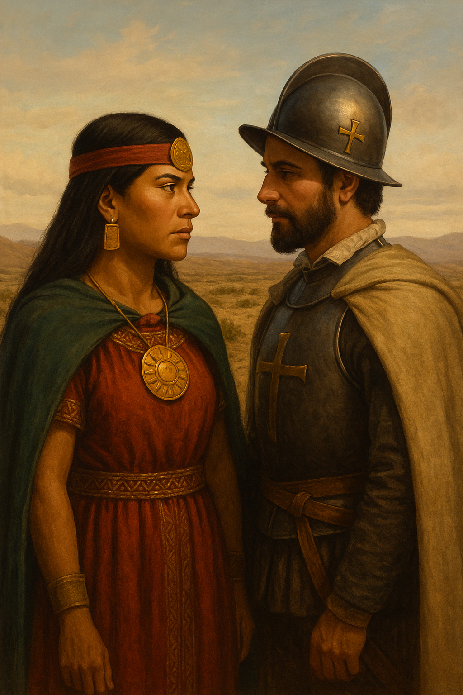

Presentación general del recurso
Este recurso educativo abierto (REA) está diseñado para estudiantes de 2º medio en la asignatura de Lengua y Literatura. A través del estudio de diversos géneros discursivos, se propone una aproximación interdisciplinaria, cultural y crítica a la figura de Ñusta Huillac, personaje histórico y legendario poco conocido en el contexto chileno y regional.
El objetivo es que los estudiantes, organizados en grupos, trabajen distintos tipos de textos que abordan directa o indirectamente la figura de Ñusta Huillac y la fiesta de La Tirana, reflexionando sobre las características formales y contextuales de cada género discursivo, al tiempo que reconstruyen colaborativamente una representación múltiple de esta figura femenina desde distintas miradas.
El recurso está estructurado en tres etapas: antes, durante y después de la lectura. Incluye actividades de análisis, organizadores gráficos, trabajo en grupo y exposición oral, todo ello apoyado en materiales con licencias abiertas.
Representación de Ñusta Huillac junto a Vasco de Almeyda.
Imagen generada con inteligencia artificial (GPT, 2025)